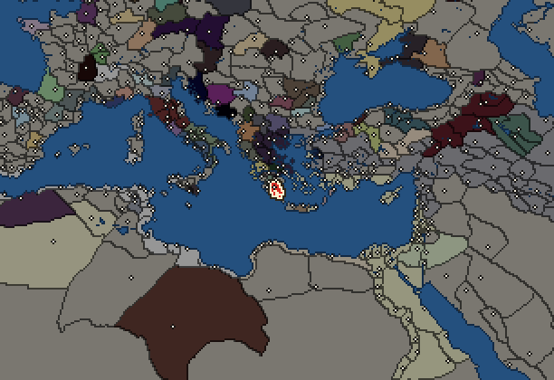
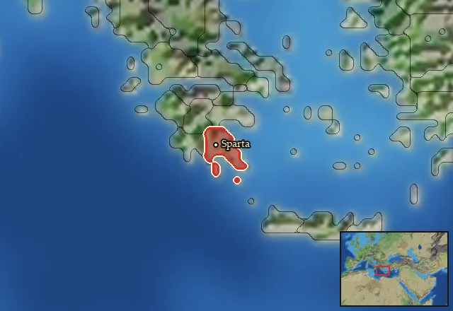

RTR: Imperium Surrectum
RTR: Imperium SurrectumSparta


- difficulty Medium
- Greek culture
- believes
 Dorian
Dorian - 1 settlement
- capital Sparta
- 5,500 manpower
- 2 characters
- 16 faction units
- 441 regional units
The campaign brief
"Stranger, tell the Spartans that here we lie, obedient to their laws." – (Epigram at Thermopylai)
In times immemorial, there was only Chaos. From Chaos came Earth, Gaia. And on Gaia, there was only the rock. The rock, the sand and the water. Prometheus mixed rock, sand and water into mud, and out of mud he created man. He gave us the fire, but his deed also led to Pandora releasing all the evils of the cosmos into the realms of the mortals. Ever since, man has suffered. Eurotas suffered, when he overcame the river. Klete suffered, when she gave birth to Sparte. Sparte married Lakedaimon, and he suffered much, too, when he undertook the arduous task of building a city. Yet building a city he did, and we proudly call it both Lakedaimon and Sparte even today.
Years passed, men died, men were born, but the rock always stayed. The Eurotas was still running through the green lands of Lakonia and the Taygetos guarded our lands, when Helena, the daughter of glorious Menelaos, was stolen by the Trojans. The Trojans were punished, but so were the Atrides, for suffering is the fate of man. The scions of the immortal Herakles suffered, when they came into the valley of the Eurotas to win Lakedaimon. On their great wandering, these Dorians had to bear many an evil, but they cleansed this land with their blood and made it holy. Eurysthenes and Prokles, wise and proud, came together to rule our lands, and ever since the sacred houses of the Eurypontids and Agiads have given us kings.
As time flowed by, the water of the Eurotas cut the rock, deeper, and deeper, and in the shadow of the Taygetos we Lakedaimonians became the foremost men of Hellas. Lakonia was ours, and the Messenian cowards were punished for their impudence. The Gods made us their masters, and their masters we shall always be. Many tried to challenge us: we put the monstrous Argives in their place, and we saved Hellas from the tyranny of the Athenians. Yet there was no greater glory than that which befell Leonidas and his men: They died for their and our freedom and the freedom of all Greeks from time immemorial to a distant future no one but the Pythia can foresee. They suffered, but their reward exceeded everything men can imagine: for what greater prize is there than the freedom to live in Elysion, and the sure knowledge to have secured the freedom of the mortals, to be remembered for generations, if not until the end of days? Long live Leonidas and his memory, long live the two hundred ninety-seven men who fell with him. May Aphrodite praise the victors of Plataiai, those who saved Hellas from the tyranny of the Barbarians!
Yet, the fate of men is to suffer, and because of our strength, our victories and our most excellent way of life, the Moirai envied our glory. They sent the lowly Thebans, worthless creatures who once betrayed the Hellenes to the Barbarians, imitators of Ephialtes, to make us suffer the greatest of evils. Having destroyed our armies, the impertinent Epaminondas, servant of Hades, put two thorns in our sides: Messene and Megalopolis are their names, and if Lakedaimon shall return to its former glory, they must be destroyed: From rock and sand they were made, rock and sand they shall once more become.
After the shameful Thebans came the goatherd Alexander, and once more we were betrayed – oh cruel Moirai, what have we done to deserve this fate? Now Lakedaimon is but a shadow of its former self. The slavish Messenians are free, but freedom is not meant for lowly beasts like them. The Barbarians from the North still stand strong, heirs of the boy king Alexander, but their infightings will bring about their downfall, Tyche be my witness. On the island of Pelops, the children of Achaia rise up, whilst the Arkadians watch us with scorning views from their fortress of Megalopolis, this insult to our name. Once proud Korinthos, our friend and enemy on many occasions, is now but a slave of the Barbarians. Rumour has it even the Helots in Lakonia are getting bolder by the day. Is the end near? Or will we save Lakedaimon? Are the Kings capable? Will Sparte return to its ancient form, or should we even consider adapting to the new world out there? The fate of Lakedaimon lies in your hands! Only one thing is sure: Suffer you will, and if you fail or succeed: The rock of the Taygetos, the sand of Lakonia and the water of the Eurotas will be there to witness it all…
Starting diplomacy
Allied with (3):  Achaean League ·
Achaean League ·  Athens ·
Athens ·  Ptolemaic Empire
Ptolemaic Empire
Trade agreements with (3):  Achaean League ·
Achaean League ·  Athens ·
Athens ·  Ptolemaic Empire
Ptolemaic Empire
At peace with every other faction.
Like every faction, it is also at war with the  Free Peoples, who hold every settlement no faction does.
Free Peoples, who hold every settlement no faction does.
Starting settlements
Sparta begins with 1 settlement and 5,500 manpower.
What is already built in each settlement
Sparta, in Lakonia: Small Treasury, Governor's Villa, Homeland, Region Information Scroll, Roads, Local Barter, Trade Port, Grape Orchards (Rural), Irrigation Ditches (Crops), Basic Armoury, Cisterns (Sanitation)
Homeland
Sparta's homeland is 1 region. Only there can it install the Homeland government (more on homelands).

Starting characters
| Name | Role | Age | Name | Role | Age | ||||||
|---|---|---|---|---|---|---|---|---|---|---|---|
| Eudamidas | General | 40 | Areus | General | 42 |
Faction mechanics
From the game's own guide. See also the other game guides.
Special Mechanics
Sparta has a mercenary centre in Gytheion, check its Region Information Building for more details.
Military reforms
Sparta has one reform.
Spartan reforms requirements: 47 turns and 15 battles against the Antigonids.
Unlocks: Spartan Cavalry Bodyguard, Neodamodeis Phalangites, Perioikoi Phalangites, Spartan Euzonoi
Reforms
For every faction: Military innovations have arrived!, Second wave of military innovations have arrived!.
Units you can recruit
The same as in the main campaign.